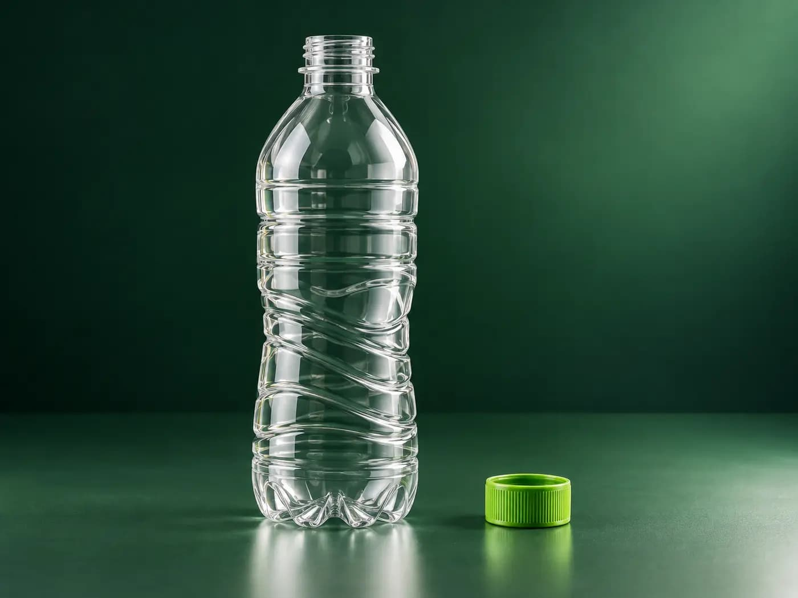

BÚSQUEDA ASISTIDA POR CÁMARA
Identifica tu residuo con una foto
Apunta con la cámara de tu dispositivo o selecciona una imagen de tu galería para detectar automáticamente el tipo de material y su acondicionamiento recomendado.

La imagen se procesa temporalmente para la identificación visual y no se almacena en servidores públicos.
CANDIDATO IDENTIFICADO
Botella de plástico PET (Bebidas)
Envase transparente o ligeramente coloreado fabricado en tereftalato de polietileno (PET #1). Es un residuo 100% reciclable en estaciones de acopio autorizadas.
Consejos para una detección precisa
Evita sombras pronunciadas o contraluces que oculten la silueta o el color real del residuo.
Coloca el objeto sobre una mesa o superficie neutra para que el visor lo distinga de otros elementos.
Si el envase tiene número de reciclaje (como el triángulo con el 1 o 2), enfócalo directamente.